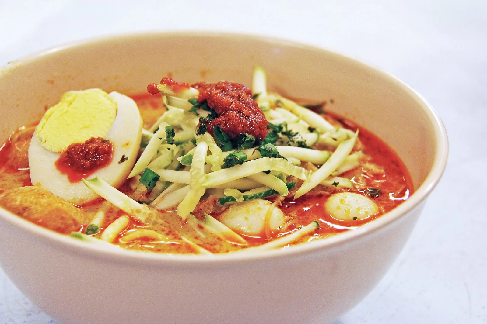

1½ L water (to boil chicken)
1 large chicken leg
3 scallion whites (save greens as garnish)
1 slice ginger
4 cloves crushed garlic
½ tbsp turmeric powder
3 tbsp kosher salt
1 tbsp sesame oil (for brushing on at the end)
Rice Ingredients:
1 cup jasmine rice
1¼ cups chicken stock (from chicken)
2 tbsp ginger (chopped)
1 shallot or small yellow onion (diced)
4 cloves garlic (chopped)
½ tsp turmeric powder
Ginger Scallion Oil Ingredients
¼ cup ginger (finely chopped or minced)
1 stalk scallion chopped
½ tsp salt
Chili Sauce Ingredients (optional)
3 long red chilies
1 deseeded birds eye chili
½ lime (juiced)
6 cloves garlic
1 knob peeled ginger (equal amount to garlic)
1 tbsp sugar
1 tsp salt
3 tbsp chicken stock
1. Wash the chicken thoroughly (this gives you a clearer broth to serve later on).
2. Season chicken with 2 tbsp of salt. (this might seem like a lot but remember you're boiling it)
3. Bring water up to a boil then throw in scallions, ginger, garlic, turmeric powder, and pinch of salt. Make sure there is just enough water to cover the chicken.
4. Drop the chicken leg into the water and bring heat down to a simmer to cook for 25 minutes.
5. While the chicken is cooking, prepare your rice ingredients (wash rice, chop shallots, garlic and ginger)
6. Using 1 tbsp of oil, fry shallots, ginger, and garlic for 1-2 minutes over high heat.
7. Add rice, and tumeric powder then mix until combined and set aside in rice cooker.
8. Once the chicken is cooked through, take it out and immediately place in an ice bath for 10 minutes (this gives it that springy elastic chicken texture).
9. Pour 1¼ cups of the chicken broth (broth made from cooking chicken) into the rice cooker and cook accordingly. Don't worry about oil from the chicken in the stock, that adds extra flavor.
10. While I wait for the rice to cook I usually make the ginger scallion oil and chili sauce. Ginger scallion oil is a must for this dish, chili sauce is optional but recommended. (I will link a full recipe post for the sauces below this recipe card.)
11. To make the chili sauce, combine all chili sauce ingredients in a blender and blend until smooth.
12. To make the ginger scallion oil, finely chop ginger and scallions, if you're lazy just grate the ginger(the finer the better) then add salt and pour over hot oil.
13. De-bone chicken (recommended)
14. Plate the rice and brush chicken with sesame oil. Serve with sauces and top with green onions!

2 lbs crab cut in half
2 tbsp cooking oil
2 tbsp garlic minced
3 tbsp ginger minced
1 tbsp crushed red pepper or 3 pieces sliced red chili
2 tbsp hoisin sauce
1/2 cup tomato catsup or tomato sauce
1/4 cup sweet chili sauce
2 tbsp fish sauce
1/2 tsp sesame oil
1/4 cup water
3 tbsp green onions or scallions thinly sliced crosswise
1. Heat a cooking pot and pour the cooking oil
2. Saute the garlic, ginger, and crushed red pepper
3. Add the crab and cook for 3 to 4 minutes
4. Put-in the hoisin sauce, tomato ketchup, sweet chili sauce, fish sauce,and sesame oil then mix with the other ingredients
5. Pour-in the water and bring to a boil then simmer for 10 to 15 minutes or until the sauce gets thick
6. Garnish with green onions on top
7. Serve hot. Share and Enjoy!

CHICKEN STOCK
2 cups (500 ml) chicken stock / broth
1 cup (250 ml) water
3 chicken drumsticks (Note 1)
LAKSA BROTH
1 1/2 tbsp oil
2 garlic cloves , minced
2 cm / 4/5″ piece of ginger , finely grated
1 lemongrass , white part grated, (Note 2)
2 birds eye chillis , finely chopped (Note 3)
1/2 cup (175g) laksa paste (Note 4)
400g / 14 oz can coconut milk (Note 5)
2 tsp fish sauce (sub soy)
NOODLES + TOPPINGS
50g / 1.5 oz vermicelli noodles , dried
100g / 3.5oz hokkien noodles (optional, Note 6)
80g / 2.5 oz bean sprouts
80g / 2.5 oz tofu puffs , cut in half (Note 7)
LAKSA CHILLI SAUCE (NOTE 8)
1/2 tsp sugar , white
1 1/2 tsp soy sauce , light or all purpose
1/2 garlic clove , minced
1 1/2 tsp Laksa paste (Note 4)
1 tbsp Sriracha sauce , or other chilli sauce
1 tbsp chilli paste from jar , or more Sriracha
1 tbsp vegetable oil (any plain oil)
GARNISHES
Fresh coriander / cilantro (recommended)
Lime wedges (recommended)
Crispy fried shallots , optional (Note 8)
Finely sliced red chilli , optional
CHICKEN STOCK
1. Place Chicken Stock ingredients in a medium saucepan over high heat. Bring to simmer, then reduce to medium high.
2. Cook for 25 minutes or until chicken flesh is falling off the bone and liquid reduces by about 1/3.
3. Discard skin, pull flesh off the bone and place in bowl, discard bone. Set broth aside.
LAKSA CHILLI SAUCE
1. Mix ingredients together in a small bowl. Set aside for 20 minutes.
LAKSA BROTH
1. Heat oil in a large saucepan or small pot over medium low heat. Add garlic and ginger, sauté for 20 seconds, then add lemongrass and chillis. Cook for 1 minute.
2. Add laksa paste. Turn heat up to medium and cook for 2 minutes, stirring constantly, or until fragrant.
3. Add chicken stock, coconut milk, fish sauce and 2 tsp of Laksa Chilli Sauce. Place lid on and simmer on for 10 minutes.
4. Adjust to taste using lime juice (for sour) and fish sauce (for saltiness). Add tofu puffs. Leave on turned off stove with lid on for 5 minutes.
ASSEMBLE LAKSA
1. Prepare noodles per packet directions.
2. Divide noodles between 2 bowls. Top with shredded chicken.
3. Pour broth over chicken. Top with beansprouts. Sprinkle with Garnishes you choose to use. Serve with Laksa Chilli Sauce on the side.